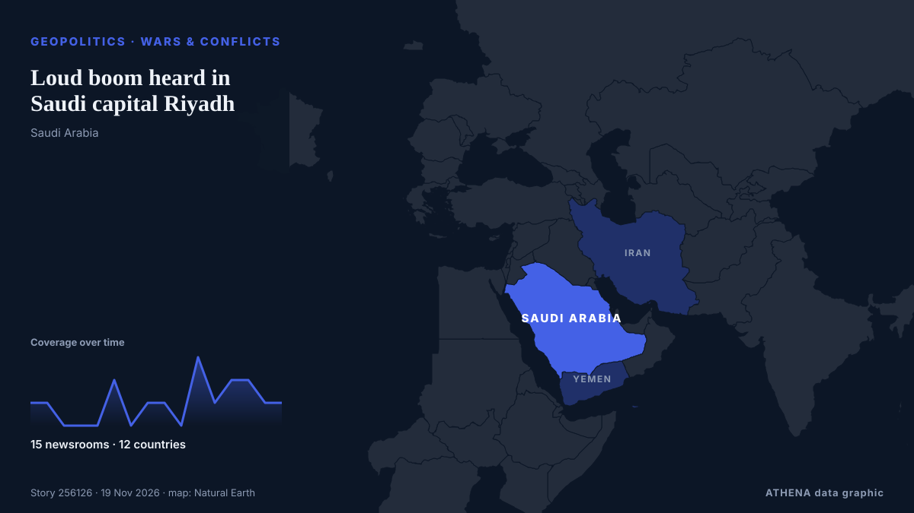

ATHENA Glaux Intelligence — Παγκόσμια ειδησεογραφική ανάλυση — κάθε αριθμός εξηγημένος
Κάθε είδηση, ελεγμένη σε πολλές χώρες.
Το ATHENA Glaux παρακολουθεί 635 ειδησεογραφικά μέσα σε όλο τον κόσμο. Μια είδηση γίνεται επαληθευμένο γεγονός μόνο όταν την αναφέρουν ανεξάρτητα μέσα. Κάθε γεγονός δείχνει ποιος το ανέφερε πρώτος και έναν βαθμό κινδύνου με τους λόγους του.
Αναφορές έρχονται από ανεξάρτητα μέσα — όταν δύο συναντηθούν στην ίδια ιστορία, γίνεται επιβεβαιωμένο γεγονός.
Πώς ελέγχει το ATHENA μια είδηση
- ΣυλλογήΟι αναφορές φτάνουν από ανεξάρτητα μέσα σε πολλές χώρες.
- ΑντιστοίχισηΌταν δύο μέσα συναντιούνται στην ίδια είδηση, γίνεται επαληθευμένο γεγονός.
- ΕξήγησηΚάθε γεγονός δείχνει ποιος ήταν πρώτος, πόσο εξαπλώθηκε και γιατί ο κίνδυνος είναι αυτός.

ΓεωπολιτικήLoud boom heard in Saudi capital Riyadh
Riyadh: A powerful explosion was heard in Riyadh on Wednesday, AFP journalists and residents reported, following weeks of attacks on Saudi Arabia by Yemen's Ansar AllahResidents to... από Oman Observer
Οι τίτλοι των ειδήσεων παρουσιάζονται στα αγγλικά, όπως δημοσιεύτηκαν.
Bangladesh needs COP31 to deliver clarity on climate finance
Bangladesh cannot bear rising climate costs alone - the UN climate summit in Antalya must show how timely, accessible finance will be delivered at the scale needed. από Climate Home News
Robert Pattinson’s James Bond Casting Causes Some 007 Fan Backlash
A look at reactions to previous James Bond casting announcements, similarities to Batman casting backlash, and what it means for Robert Pattinson as the new 007. από Forbes Business

Πλοία στα θαλάσσια περάσματα τώρα
Ζωντανές μετρήσεις AIS. Πατήστε ή περάστε πάνω από μια μπάρα για λεπτομέρειες.
Iran fires on US airbase in Kuwait, several times at Bahrain
Iran fired on a US airbase in Kuwait and several times at Bahrain on Wednesday, in what appeared to be retaliation for US strikes the day before, AP reported. από Gulf News
US hits out at Ukraine’s ‘deep strikes’ against Russia
US defence official Elbridge Colby said support for Kyiv should be focused on bolstering the front line. από The Straits Times
Nvidia faces a new threat after Jensen Huang's ouster: Losing its best engineers
Nvidia is offering better compensation to try to retain engineers after Jensen Huang's ouster. από Business Insider
Γεωπολιτική, Πολιτική & Ασφάλεια
Περισσότερα ›Parts of Bangladesh shut down in protests by Hasina's party, ex-leader Yunus's home set ablaze
Parts of Bangladesh shut down as police said two ruling party members were killed and the ancestral home of former leader Muhammad Yunus set ablaze in violence ahead of former Prime Minister Sheikh… από Dawn
- Διπλωματία & σύνοδοι
Xi and Putin meet at APEC summit ahead of trilateral talks with Trump
- Εκλογές & πολιτική
Musk says he felt ‘pretty foolish’ about scale of midterm spending after Republican rout
- Εκλογές & πολιτική
Trump’s anger with Vance is growing after VP blamed the Iran war for the Republican midterm losses: report
- Συμμαχίες & συνθήκες
Parliament amends bill on Iran’s accession to Mecca Pact
Οικονομία, Χρηματοοικονομικά & Αγορές
Περισσότερα ›After $6.3 billion crypto heist, Binance plans Asia expansion
Binance, the world’s largest cryptocurrency exchange, plans to expand into five Asian markets next year and has no need to raise funds as its finances are sound, its regional business head told… από Daily Mirror
- Κρυπτονομίσματα & ψηφιακά στοιχεία
‘The Altruists’ review: another cautionary tale of power, corruption and tech bros
- Χρέος & προϋπολογισμοί
IMF Reaches Agreement with Egypt to Unlock $2.3 Billion in Funds
- Τράπεζες & πίστη
More Australians failing to make mortgage payments as interest rate rises bite
- Μετοχές, ομόλογα & αγορές
Pierce Brosnan tells new James Bond actor Robert Pattinson to ‘enjoy the ride’
Εμπόριο, Βιομηχανία & Υποδομές
Περισσότερα ›Hanoi shuts streets around central lake for 6 days for Vietnam's first Culture Day
Hanoi police are closing streets around Hoan Kiem Lake to traffic from Wednesday until Monday next week for the opening of Vietnam Culture Day celebrations. από VnExpress International
- Κατασκευές & υποδομές
Destroyed Kerch bridge blocks Azov Sea, Don and Volga rivers ports
- Κατασκευές & υποδομές
Train traffic across Crimean Bridge suspended after another Ukrainian strike
- Κατασκευές & υποδομές
Ukraine launches another strike on Crimean Bridge
- Ναυτιλία & λιμάνια
IMO’s Marine Environment Protection Committee MEPC 85 to discuss shipping emissions, pollution and other ocean issues
Ενέργεια, Πόροι & Περιβάλλον
Περισσότερα ›EnQuest Sells UK North Sea Assets to NEO NEXT+ in $960M Deal
EnQuest has agreed to sell its UK upstream oil and gas business and associated infrastructure to NEO NEXT+ for up to $960 million, marking a major step in its strategic shift towards Southeast Asia… από Offshore Engineer
- ΑΠΕ & αποθήκευση
Global solar PV additions to fall in 2026 for first time since 2018, forecasts GlobalData
- Ενεργειακή ασφάλεια
Mideast crisis ‘largest threat’ to energy security ever: IEA
- Πετρέλαιο & φυσικό αέριο
Hormuz disruptions cut oil supply by 2.8bn barrels
- Πυρηνική ενέργεια
IAEA says North Korea is expanding uranium-enrichment plant at Yongbyon
Τεχνολογία, ΤΝ & Κυβερνοασφάλεια
Περισσότερα ›On Nvidia scandal, Trump says US spies on China too and is ‘better’ at it
Suspected China spy linked to Nvidia's ex-boss left in 2025, Megaspeed says. από Ada Derana
Επιχειρήσεις, Εταιρείες & Επενδύσεις
Περισσότερα ›Google ‘rejects Government’s request to remove Russell Brand video from YouTube’
Meta disabled Brand’s Instagram and Facebook accounts after his conviction. από Evening Standard (London)
- Εταιρική στρατηγική
Tesla’s $30,000 Cybercab comes with a $299 monthly catch
- Συγχωνεύσεις & εξαγορές
Eurobank agrees to acquire Fibank, creating Bulgaria’s No. 1 bank
- Επενδύσεις
Experts hail China's APEC hosting as boost to innovation, cooperation
- Εταιρική στρατηγική
GTA 6 launches after 13-year wait, breaking pre-order records
Δυστυχήματα & έκτακτες ανάγκες
Περισσότερα ›Doctors amputate weightlifter Hafizuddin's right arm after crash
KUALA LUMPUR: National weightlifter Hafizuddin Roslin had his right arm amputated on Tuesday after sustaining serious injuries in a motorcycle accident on Monday night. από New Straits Times
- Δυστυχήματα & έκτακτες ανάγκες
Bayesian crew unaware of safety risk before deadly sinking, British report finds
- Δυστυχήματα & έκτακτες ανάγκες
M5 blocked near Clevedon as police respond to incident
- Δυστυχήματα & έκτακτες ανάγκες
US Central Command denies reports of personnel injured in Iranian attacks
- Δυστυχήματα & έκτακτες ανάγκες
Trump abandons his FDA nominee, and Senate scraps vote on his NSF pick
Τρεις τρόποι να διαβάσετε σήμερα
Ξεκινήστε από αυτόν που ταιριάζει στον χρόνο σαςΕπαληθευμένα γεγονότα
Κατά σειρά έκτασης της κάλυψης
- China's Xi to host historic summit with Trump, Putin84 μέσα · 43 χώρεςΚίνδυνος 5.9
- Κίνδυνος 4.4
- S. Korean won extends gains against U.S. dollar72 μέσα · 32 χώρεςΚίνδυνος 3.6
- EUR/USD Price Forecast: Weakens to near 1.0950, bearish tone prevails below 100-day SMA68 μέσα · 27 χώρεςΚίνδυνος 2.9
- Stocks drop as booming Nvidia results drowned by spy scandal52 μέσα · 26 χώρεςΚίνδυνος 3.9
Γραφείο Ανάλυσης
Κάντε μια ερώτηση και διαβάστε τεκμηριωμένη αξιολόγηση μιας βασικής είδησης, μαζί με το τι θα την διέψευδε.
Ανοίξτε το Γραφείο Ανάλυσης ›Η σημερινή εικόνα
| 11:00 | 744 |
|---|---|
| 12:00 | 366 |
| 13:00 | 597 |
| 14:00 | 804 |
| 15:00 | 701 |
| 16:00 | 515 |
| 17:00 | 641 |
| 18:00 | 901 |
| 19:00 | 754 |
| 20:00 | 389 |
| 21:00 | 509 |
| 22:00 | 460 |
| 23:00 | 681 |
| 00:00 | 489 |
| 01:00 | 515 |
| 02:00 | 314 |
| 03:00 | 349 |
| 04:00 | 531 |
| 05:00 | 532 |
| 06:00 | 613 |
| 07:00 | 556 |
| 08:00 | 464 |
| 09:00 | 524 |
| 10:00 | 464 |
Κίνδυνος των σημερινών γεγονότων
Αναδυόμενα σήματα
- Απότομη αύξηση · Ενεργό τώραPutin and Trump
- Απότομη αύξηση · Ενεργό τώραRohingya
- Νέο όνομα στις ειδήσεις · Ενεργό τώραDealBook Summit
- Απότομη αύξηση · Ενεργό τώραNicolás Maduro
- Απότομη αύξηση · Ενεργό τώραYellow Line
Μείνετε ενημερωμένοι
ATHENA Weekly Risk Picture
Οι μεγαλύτεροι γεωπολιτικοί, οικονομικοί και ναυτιλιακοί κίνδυνοι της εβδομάδας, διασταυρωμένοι και βαθμολογημένοι.
Κάθε Παρασκευή στις 08:00 ώρα Ελλάδας · δωρεάν · στα αγγλικά
Δωρεάν εγγραφήΤο ATHENA στο Telegram
Οι ειδήσεις τη στιγμή που δημοσιεύονται: έκτακτα γεγονότα με κίνδυνο 6 ή περισσότερο, ωριαία σύνοψη, ενημερώσεις κινδύνου και η ημερήσια ενημέρωση στις 10:00.
Δωρεάν · αναρτήσεις στα αγγλικά · αποχωρείτε όποτε θέλετε
Είσοδος στο κανάλιΤην εγγραφή τη διαχειρίζεται η beehiiv με διπλή επιβεβαίωση: τίποτα από όσα πληκτρολογείτε δεν αποστέλλεται στο ATHENA, και κάθε τεύχος έχει σύνδεσμο διαγραφής.
Παρακολούθηση κινδύνων
Περισσότερα ›Παγκόσμιοι κίνδυνοι — εβδομάδα 47, 2026 (16–22 Νοε) ›